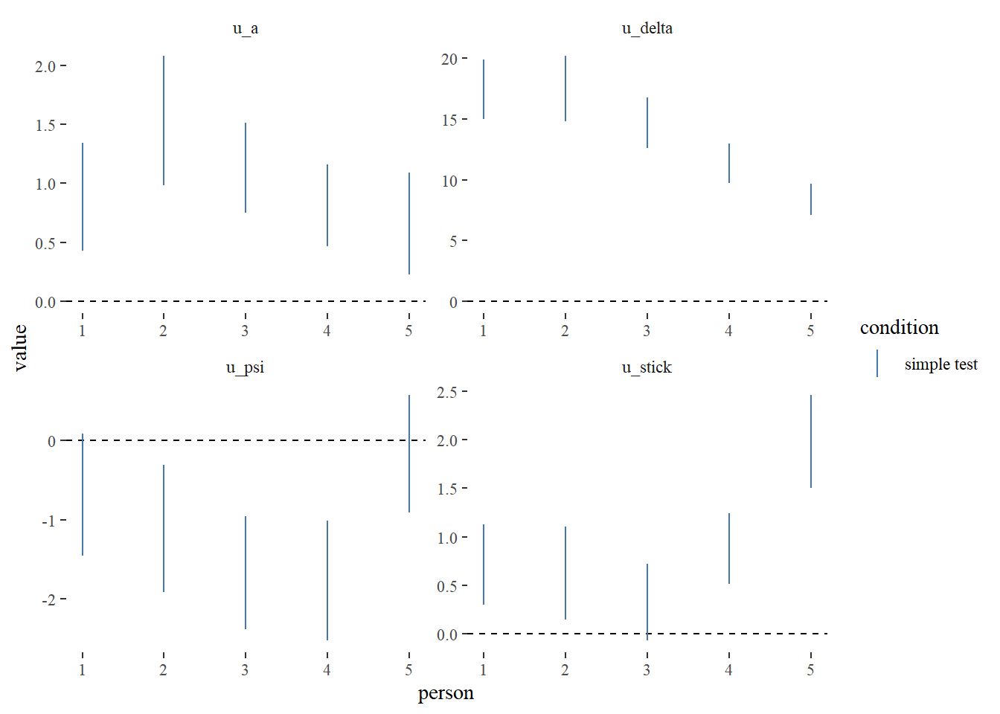
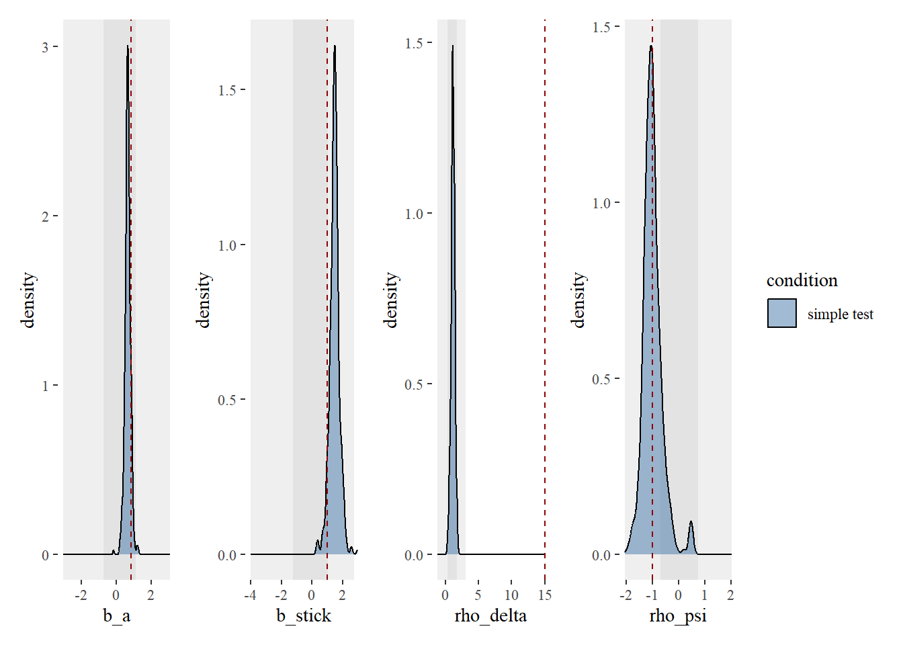
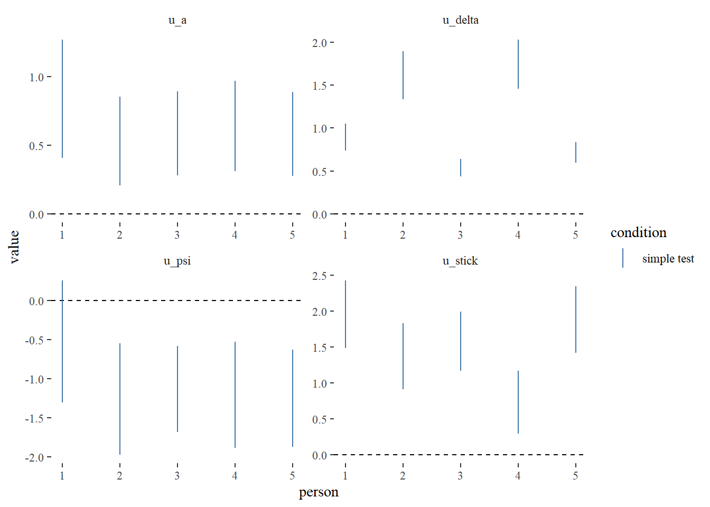
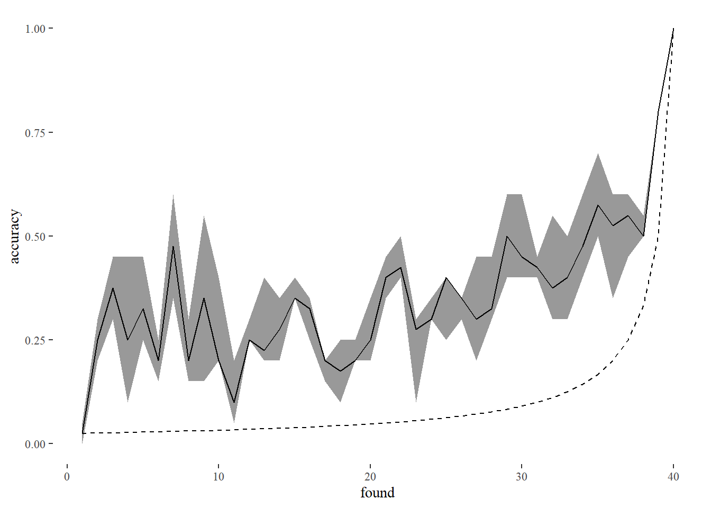

library(tidyverse)
library(cmdstanr)
source("../../functions/import_data.R")
source("../../functions/prep_data.R")
source("../../functions/compute_summary_stats.R")
source("../../functions/plot_model.R")
source("../../functions/plot_data.R")
source("../../functions/post_functions.R")
source("../../functions/sim_foraging_data.R")
options(mc.cores = 4)
# set global ggplot theme
theme_set(ggthemes::theme_tufte())2) fitting the NEW old foraging model - to simulated data
Fitting Model to Simulated Data
- Model 1.0: the original model first detailed in Clarke et al (2022), reimplemented in new code. The only other edit is to correctly calculate absolute proximity (we previously scaled before calculating inter-item distances, which led to expansion of vertical distances compared to the horizontal in cases where foraging stimuli were arranged on a rectangular grid - this minor edit makes little difference to the overall fit of the model).
- Model 1.1: the same as model 1.1., except it uses relative proximity - for each item selection, we divide all inter-target distances by the distance to the closest item. The idea behind this is that it may allow the model’s proximity weighting to cope better towards the end of a trial when the items are sparser.
Multilevel model
First simulate some data
We can build up our model to include multiple participants (5 in this case). Here, we again only consider one condition, but multiple conditions could be included (e.g. feature/conjunction).
item_class_weights = list(c(0.7, 0.3, 0, 0))
b_stick = 1
rho_delta = 15
sd_rho_delta = 5
rho_psi = -1
abs_dir_tuning = list(kappa = rep(10, 4), theta = rep(1, 4))
# initial bias params
inital_sel_params <- tibble(
a1x = 2,
b1x = 2,
a2x = 1,
b2x = 10,
a1y = 2,
b1y = 2,
a2y = 10,
b2y = 1)
d <- sim_foraging_people(n_people = 5,
n_conditions = 1,
cond_lab = c("simple test"),
n_trials_per_cond = 4,
n_item_class = 2, n_item_per_class = 20,
item_class_weights, sd_bA = 0.2,
b_stick = b_stick, sd_b_stick = 1,
rho_delta = rho_delta, sd_rho_delta = sd_rho_delta,
rho_psi = rho_psi, sd_rho_psi = 0.5,
abs_dir_tuning = abs_dir_tuning,
inital_sel_params = inital_sel_params) ■■■■■■■ 20% | ETA: 6s ■■■■■■■■■■■■■■■■■■■ 60% | ETA: 3sd$found <- fix_person_and_trial(d$found)
d$stim <- fix_person_and_trial(d$stim)Now fit our model
d_list <- prep_data_for_stan(d$found, d$stim, c("spatial", "item_class"))
d_list <- add_priors_to_d_list(d_list, modelver = "1.0")
d_list$n_trials_to_sim <- 1iter = 100
mod <- cmdstan_model("../../models/multi_level/FoMo1_0.stan")
fit <- mod$sample(data = d_list,
chains = 4, parallel_chains = 4, threads = 4,
refresh = 0,
iter_warmup = iter, iter_sampling = iter,
sig_figs = 3)Chain 1 Informational Message: The current Metropolis proposal is about to be rejected because of the following issue:Chain 1 Exception: lkj_corr_cholesky_lpdf: Random variable[3] is 0, but must be positive! (in 'C:/Users/ah19679/AppData/Local/Temp/RtmpQrRyBK/model-44a434e42480.stan', line 138, column 2 to column 31)Chain 1 If this warning occurs sporadically, such as for highly constrained variable types like covariance matrices, then the sampler is fine,Chain 1 but if this warning occurs often then your model may be either severely ill-conditioned or misspecified.Chain 1 Chain 1 Informational Message: The current Metropolis proposal is about to be rejected because of the following issue:Chain 1 Exception: lkj_corr_cholesky_lpdf: Random variable[3] is 0, but must be positive! (in 'C:/Users/ah19679/AppData/Local/Temp/RtmpQrRyBK/model-44a434e42480.stan', line 138, column 2 to column 31)Chain 1 If this warning occurs sporadically, such as for highly constrained variable types like covariance matrices, then the sampler is fine,Chain 1 but if this warning occurs often then your model may be either severely ill-conditioned or misspecified.Chain 1 Chain 1 Informational Message: The current Metropolis proposal is about to be rejected because of the following issue:Chain 1 Exception: lkj_corr_cholesky_lpdf: Random variable[3] is 0, but must be positive! (in 'C:/Users/ah19679/AppData/Local/Temp/RtmpQrRyBK/model-44a434e42480.stan', line 138, column 2 to column 31)Chain 1 If this warning occurs sporadically, such as for highly constrained variable types like covariance matrices, then the sampler is fine,Chain 1 but if this warning occurs often then your model may be either severely ill-conditioned or misspecified.Chain 1 Chain 2 Informational Message: The current Metropolis proposal is about to be rejected because of the following issue:Chain 2 Exception: lkj_corr_cholesky_lpdf: Random variable[2] is 0, but must be positive! (in 'C:/Users/ah19679/AppData/Local/Temp/RtmpQrRyBK/model-44a434e42480.stan', line 138, column 2 to column 31)Chain 2 If this warning occurs sporadically, such as for highly constrained variable types like covariance matrices, then the sampler is fine,Chain 2 but if this warning occurs often then your model may be either severely ill-conditioned or misspecified.Chain 2 Chain 2 Informational Message: The current Metropolis proposal is about to be rejected because of the following issue:Chain 2 Exception: lkj_corr_cholesky_lpdf: Random variable[2] is 0, but must be positive! (in 'C:/Users/ah19679/AppData/Local/Temp/RtmpQrRyBK/model-44a434e42480.stan', line 138, column 2 to column 31)Chain 2 If this warning occurs sporadically, such as for highly constrained variable types like covariance matrices, then the sampler is fine,Chain 2 but if this warning occurs often then your model may be either severely ill-conditioned or misspecified.Chain 2 Chain 2 Informational Message: The current Metropolis proposal is about to be rejected because of the following issue:Chain 2 Exception: lkj_corr_cholesky_lpdf: Random variable[3] is 0, but must be positive! (in 'C:/Users/ah19679/AppData/Local/Temp/RtmpQrRyBK/model-44a434e42480.stan', line 138, column 2 to column 31)Chain 2 If this warning occurs sporadically, such as for highly constrained variable types like covariance matrices, then the sampler is fine,Chain 2 but if this warning occurs often then your model may be either severely ill-conditioned or misspecified.Chain 2 Chain 2 Informational Message: The current Metropolis proposal is about to be rejected because of the following issue:Chain 2 Exception: lkj_corr_cholesky_lpdf: Random variable[2] is 0, but must be positive! (in 'C:/Users/ah19679/AppData/Local/Temp/RtmpQrRyBK/model-44a434e42480.stan', line 138, column 2 to column 31)Chain 2 If this warning occurs sporadically, such as for highly constrained variable types like covariance matrices, then the sampler is fine,Chain 2 but if this warning occurs often then your model may be either severely ill-conditioned or misspecified.Chain 2 Chain 2 Informational Message: The current Metropolis proposal is about to be rejected because of the following issue:Chain 2 Exception: lkj_corr_cholesky_lpdf: Random variable[2] is 0, but must be positive! (in 'C:/Users/ah19679/AppData/Local/Temp/RtmpQrRyBK/model-44a434e42480.stan', line 138, column 2 to column 31)Chain 2 If this warning occurs sporadically, such as for highly constrained variable types like covariance matrices, then the sampler is fine,Chain 2 but if this warning occurs often then your model may be either severely ill-conditioned or misspecified.Chain 2 Chain 3 Informational Message: The current Metropolis proposal is about to be rejected because of the following issue:Chain 3 Exception: lkj_corr_cholesky_lpdf: Random variable[2] is 0, but must be positive! (in 'C:/Users/ah19679/AppData/Local/Temp/RtmpQrRyBK/model-44a434e42480.stan', line 138, column 2 to column 31)Chain 3 If this warning occurs sporadically, such as for highly constrained variable types like covariance matrices, then the sampler is fine,Chain 3 but if this warning occurs often then your model may be either severely ill-conditioned or misspecified.Chain 3 Chain 3 Informational Message: The current Metropolis proposal is about to be rejected because of the following issue:Chain 3 Exception: lkj_corr_cholesky_lpdf: Random variable[2] is 0, but must be positive! (in 'C:/Users/ah19679/AppData/Local/Temp/RtmpQrRyBK/model-44a434e42480.stan', line 138, column 2 to column 31)Chain 3 If this warning occurs sporadically, such as for highly constrained variable types like covariance matrices, then the sampler is fine,Chain 3 but if this warning occurs often then your model may be either severely ill-conditioned or misspecified.Chain 3 Chain 3 Informational Message: The current Metropolis proposal is about to be rejected because of the following issue:Chain 3 Exception: lkj_corr_cholesky_lpdf: Random variable[2] is 0, but must be positive! (in 'C:/Users/ah19679/AppData/Local/Temp/RtmpQrRyBK/model-44a434e42480.stan', line 138, column 2 to column 31)Chain 3 If this warning occurs sporadically, such as for highly constrained variable types like covariance matrices, then the sampler is fine,Chain 3 but if this warning occurs often then your model may be either severely ill-conditioned or misspecified.Chain 3 Chain 4 Informational Message: The current Metropolis proposal is about to be rejected because of the following issue:Chain 4 Exception: lkj_corr_cholesky_lpdf: Random variable[2] is 0, but must be positive! (in 'C:/Users/ah19679/AppData/Local/Temp/RtmpQrRyBK/model-44a434e42480.stan', line 138, column 2 to column 31)Chain 4 If this warning occurs sporadically, such as for highly constrained variable types like covariance matrices, then the sampler is fine,Chain 4 but if this warning occurs often then your model may be either severely ill-conditioned or misspecified.Chain 4 Chain 4 Informational Message: The current Metropolis proposal is about to be rejected because of the following issue:Chain 4 Exception: lkj_corr_cholesky_lpdf: Random variable[2] is 0, but must be positive! (in 'C:/Users/ah19679/AppData/Local/Temp/RtmpQrRyBK/model-44a434e42480.stan', line 138, column 2 to column 31)Chain 4 If this warning occurs sporadically, such as for highly constrained variable types like covariance matrices, then the sampler is fine,Chain 4 but if this warning occurs often then your model may be either severely ill-conditioned or misspecified.Chain 4 Chain 1 Informational Message: The current Metropolis proposal is about to be rejected because of the following issue:Chain 1 Exception: lkj_corr_cholesky_lpdf: Random variable[2] is 0, but must be positive! (in 'C:/Users/ah19679/AppData/Local/Temp/RtmpQrRyBK/model-44a434e42480.stan', line 138, column 2 to column 31)Chain 1 If this warning occurs sporadically, such as for highly constrained variable types like covariance matrices, then the sampler is fine,Chain 1 but if this warning occurs often then your model may be either severely ill-conditioned or misspecified.Chain 1 Chain 1 Informational Message: The current Metropolis proposal is about to be rejected because of the following issue:Chain 1 Exception: lkj_corr_cholesky_lpdf: Random variable[3] is 0, but must be positive! (in 'C:/Users/ah19679/AppData/Local/Temp/RtmpQrRyBK/model-44a434e42480.stan', line 138, column 2 to column 31)Chain 1 If this warning occurs sporadically, such as for highly constrained variable types like covariance matrices, then the sampler is fine,Chain 1 but if this warning occurs often then your model may be either severely ill-conditioned or misspecified.Chain 1 Chain 4 Informational Message: The current Metropolis proposal is about to be rejected because of the following issue:Chain 4 Exception: lkj_corr_cholesky_lpdf: Random variable[2] is 0, but must be positive! (in 'C:/Users/ah19679/AppData/Local/Temp/RtmpQrRyBK/model-44a434e42480.stan', line 138, column 2 to column 31)Chain 4 If this warning occurs sporadically, such as for highly constrained variable types like covariance matrices, then the sampler is fine,Chain 4 but if this warning occurs often then your model may be either severely ill-conditioned or misspecified.Chain 4 Chain 4 Informational Message: The current Metropolis proposal is about to be rejected because of the following issue:Chain 4 Exception: lkj_corr_cholesky_lpdf: Random variable[2] is 0, but must be positive! (in 'C:/Users/ah19679/AppData/Local/Temp/RtmpQrRyBK/model-44a434e42480.stan', line 138, column 2 to column 31)Chain 4 If this warning occurs sporadically, such as for highly constrained variable types like covariance matrices, then the sampler is fine,Chain 4 but if this warning occurs often then your model may be either severely ill-conditioned or misspecified.Chain 4 Chain 3 Informational Message: The current Metropolis proposal is about to be rejected because of the following issue:Chain 3 Exception: lkj_corr_cholesky_lpdf: Random variable[2] is 0, but must be positive! (in 'C:/Users/ah19679/AppData/Local/Temp/RtmpQrRyBK/model-44a434e42480.stan', line 138, column 2 to column 31)Chain 3 If this warning occurs sporadically, such as for highly constrained variable types like covariance matrices, then the sampler is fine,Chain 3 but if this warning occurs often then your model may be either severely ill-conditioned or misspecified.Chain 3 Chain 3 Informational Message: The current Metropolis proposal is about to be rejected because of the following issue:Chain 3 Exception: lkj_corr_cholesky_lpdf: Random variable[2] is 0, but must be positive! (in 'C:/Users/ah19679/AppData/Local/Temp/RtmpQrRyBK/model-44a434e42480.stan', line 138, column 2 to column 31)Chain 3 If this warning occurs sporadically, such as for highly constrained variable types like covariance matrices, then the sampler is fine,Chain 3 but if this warning occurs often then your model may be either severely ill-conditioned or misspecified.Chain 3 fit$save_object("scratch/multi_level_1_0_tmp.rds")fit <- readRDS("scratch/multi_level_1_0_tmp.rds")Posterior Density Plots
We can plot both fixed and random effects from the model.
post <- extract_post(fit, d, multi_level = TRUE)Fixed Effects
plot_model_fixed(post, gt = list(b_a = qlogis(item_class_weights[[1]][1]),
b_stick = b_stick,
rho_delta = rho_delta,
rho_psi = rho_psi))
Random Effects
plot_model_random(post)
Model Accuracy
pred <- summarise_postpred(fit, d)
plot_model_accuracy(pred)`summarise()` has grouped output by 'found'. You can override using the
`.groups` argument.
Fitting FoMo 1.1
The multilevel variant
item_class_weights = list(c(0.7, 0.3, 0, 0))
b_stick = 1
rho_delta = 15
sd_rho_delta = 5
rho_psi = -1
abs_dir_tuning = list(kappa = rep(10, 4), theta = rep(1, 4))
# initial bias params
inital_sel_params <- tibble(
a1x = 2,
b1x = 2,
a2x = 1,
b2x = 10,
a1y = 2,
b1y = 2,
a2y = 10,
b2y = 1)
d2 <- sim_foraging_people(n_people = 5,
n_conditions = 1,
cond_lab = c("simple test"),
n_trials_per_cond = 4,
n_item_class = 2, n_item_per_class = 20,
item_class_weights, sd_bA = 0.2,
b_stick = b_stick, sd_b_stick = 1,
rho_delta = rho_delta, sd_rho_delta = sd_rho_delta,
rho_psi = rho_psi, sd_rho_psi = 0.5,
abs_dir_tuning = abs_dir_tuning,
inital_sel_params = inital_sel_params) ■■■■■■■■■■■■■ 40% | ETA: 5s ■■■■■■■■■■■■■■■■■■■■■■■■■ 80% | ETA: 1sd2$found <- fix_person_and_trial(d2$found)
d2$stim <- fix_person_and_trial(d2$stim)iter = 100
mod <- cmdstan_model("../../models/multi_level/FoMo1_1.stan")
d2_list <- prep_data_for_stan(d2$found, d2$stim, c("spatial", "item_class"))
d2_list <- add_priors_to_d_list(d2_list, modelver = "1.1")
d2_list$n_trials_to_sim <- 1
fit <- mod$sample(data = d2_list,
chains = 4, parallel_chains = 4, threads = 4,
refresh = 0,
iter_warmup = iter, iter_sampling = iter,
sig_figs = 3)Chain 1 Informational Message: The current Metropolis proposal is about to be rejected because of the following issue:Chain 1 Exception: lkj_corr_cholesky_lpdf: Random variable[4] is 0, but must be positive! (in 'C:/Users/ah19679/AppData/Local/Temp/RtmpQrRyBK/model-44a41691d41.stan', line 141, column 2 to column 31)Chain 1 If this warning occurs sporadically, such as for highly constrained variable types like covariance matrices, then the sampler is fine,Chain 1 but if this warning occurs often then your model may be either severely ill-conditioned or misspecified.Chain 1 Chain 1 Informational Message: The current Metropolis proposal is about to be rejected because of the following issue:Chain 1 Exception: lkj_corr_cholesky_lpdf: Random variable[4] is 0, but must be positive! (in 'C:/Users/ah19679/AppData/Local/Temp/RtmpQrRyBK/model-44a41691d41.stan', line 141, column 2 to column 31)Chain 1 If this warning occurs sporadically, such as for highly constrained variable types like covariance matrices, then the sampler is fine,Chain 1 but if this warning occurs often then your model may be either severely ill-conditioned or misspecified.Chain 1 Chain 1 Informational Message: The current Metropolis proposal is about to be rejected because of the following issue:Chain 1 Exception: lkj_corr_cholesky_lpdf: Random variable[2] is 0, but must be positive! (in 'C:/Users/ah19679/AppData/Local/Temp/RtmpQrRyBK/model-44a41691d41.stan', line 141, column 2 to column 31)Chain 1 If this warning occurs sporadically, such as for highly constrained variable types like covariance matrices, then the sampler is fine,Chain 1 but if this warning occurs often then your model may be either severely ill-conditioned or misspecified.Chain 1 Chain 1 Informational Message: The current Metropolis proposal is about to be rejected because of the following issue:Chain 1 Exception: lkj_corr_cholesky_lpdf: Random variable[2] is 0, but must be positive! (in 'C:/Users/ah19679/AppData/Local/Temp/RtmpQrRyBK/model-44a41691d41.stan', line 141, column 2 to column 31)Chain 1 If this warning occurs sporadically, such as for highly constrained variable types like covariance matrices, then the sampler is fine,Chain 1 but if this warning occurs often then your model may be either severely ill-conditioned or misspecified.Chain 1 Chain 2 Informational Message: The current Metropolis proposal is about to be rejected because of the following issue:Chain 2 Exception: lkj_corr_cholesky_lpdf: Random variable[3] is 0, but must be positive! (in 'C:/Users/ah19679/AppData/Local/Temp/RtmpQrRyBK/model-44a41691d41.stan', line 141, column 2 to column 31)Chain 2 If this warning occurs sporadically, such as for highly constrained variable types like covariance matrices, then the sampler is fine,Chain 2 but if this warning occurs often then your model may be either severely ill-conditioned or misspecified.Chain 2 Chain 3 Informational Message: The current Metropolis proposal is about to be rejected because of the following issue:Chain 3 Exception: lkj_corr_cholesky_lpdf: Random variable[2] is 0, but must be positive! (in 'C:/Users/ah19679/AppData/Local/Temp/RtmpQrRyBK/model-44a41691d41.stan', line 141, column 2 to column 31)Chain 3 If this warning occurs sporadically, such as for highly constrained variable types like covariance matrices, then the sampler is fine,Chain 3 but if this warning occurs often then your model may be either severely ill-conditioned or misspecified.Chain 3 Chain 3 Informational Message: The current Metropolis proposal is about to be rejected because of the following issue:Chain 3 Exception: lkj_corr_cholesky_lpdf: Random variable[2] is 0, but must be positive! (in 'C:/Users/ah19679/AppData/Local/Temp/RtmpQrRyBK/model-44a41691d41.stan', line 141, column 2 to column 31)Chain 3 If this warning occurs sporadically, such as for highly constrained variable types like covariance matrices, then the sampler is fine,Chain 3 but if this warning occurs often then your model may be either severely ill-conditioned or misspecified.Chain 3 Chain 4 Informational Message: The current Metropolis proposal is about to be rejected because of the following issue:Chain 4 Exception: lkj_corr_cholesky_lpdf: Random variable[3] is 0, but must be positive! (in 'C:/Users/ah19679/AppData/Local/Temp/RtmpQrRyBK/model-44a41691d41.stan', line 141, column 2 to column 31)Chain 4 If this warning occurs sporadically, such as for highly constrained variable types like covariance matrices, then the sampler is fine,Chain 4 but if this warning occurs often then your model may be either severely ill-conditioned or misspecified.Chain 4 Chain 4 Informational Message: The current Metropolis proposal is about to be rejected because of the following issue:Chain 4 Exception: lkj_corr_cholesky_lpdf: Random variable[3] is 0, but must be positive! (in 'C:/Users/ah19679/AppData/Local/Temp/RtmpQrRyBK/model-44a41691d41.stan', line 141, column 2 to column 31)Chain 4 If this warning occurs sporadically, such as for highly constrained variable types like covariance matrices, then the sampler is fine,Chain 4 but if this warning occurs often then your model may be either severely ill-conditioned or misspecified.Chain 4 Chain 2 Informational Message: The current Metropolis proposal is about to be rejected because of the following issue:Chain 2 Exception: lkj_corr_cholesky_lpdf: Random variable[3] is 0, but must be positive! (in 'C:/Users/ah19679/AppData/Local/Temp/RtmpQrRyBK/model-44a41691d41.stan', line 141, column 2 to column 31)Chain 2 If this warning occurs sporadically, such as for highly constrained variable types like covariance matrices, then the sampler is fine,Chain 2 but if this warning occurs often then your model may be either severely ill-conditioned or misspecified.Chain 2 Chain 3 Informational Message: The current Metropolis proposal is about to be rejected because of the following issue:Chain 3 Exception: lkj_corr_cholesky_lpdf: Random variable[2] is 0, but must be positive! (in 'C:/Users/ah19679/AppData/Local/Temp/RtmpQrRyBK/model-44a41691d41.stan', line 141, column 2 to column 31)Chain 3 If this warning occurs sporadically, such as for highly constrained variable types like covariance matrices, then the sampler is fine,Chain 3 but if this warning occurs often then your model may be either severely ill-conditioned or misspecified.Chain 3 Chain 3 Informational Message: The current Metropolis proposal is about to be rejected because of the following issue:Chain 3 Exception: lkj_corr_cholesky_lpdf: Random variable[2] is 0, but must be positive! (in 'C:/Users/ah19679/AppData/Local/Temp/RtmpQrRyBK/model-44a41691d41.stan', line 141, column 2 to column 31)Chain 3 If this warning occurs sporadically, such as for highly constrained variable types like covariance matrices, then the sampler is fine,Chain 3 but if this warning occurs often then your model may be either severely ill-conditioned or misspecified.Chain 3 Chain 4 Informational Message: The current Metropolis proposal is about to be rejected because of the following issue:Chain 4 Exception: lkj_corr_cholesky_lpdf: Random variable[2] is 0, but must be positive! (in 'C:/Users/ah19679/AppData/Local/Temp/RtmpQrRyBK/model-44a41691d41.stan', line 141, column 2 to column 31)Chain 4 If this warning occurs sporadically, such as for highly constrained variable types like covariance matrices, then the sampler is fine,Chain 4 but if this warning occurs often then your model may be either severely ill-conditioned or misspecified.Chain 4 Chain 4 Informational Message: The current Metropolis proposal is about to be rejected because of the following issue:Chain 4 Exception: lkj_corr_cholesky_lpdf: Random variable[3] is 0, but must be positive! (in 'C:/Users/ah19679/AppData/Local/Temp/RtmpQrRyBK/model-44a41691d41.stan', line 141, column 2 to column 31)Chain 4 If this warning occurs sporadically, such as for highly constrained variable types like covariance matrices, then the sampler is fine,Chain 4 but if this warning occurs often then your model may be either severely ill-conditioned or misspecified.Chain 4 Chain 1 Informational Message: The current Metropolis proposal is about to be rejected because of the following issue:Chain 1 Exception: lkj_corr_cholesky_lpdf: Random variable[3] is 0, but must be positive! (in 'C:/Users/ah19679/AppData/Local/Temp/RtmpQrRyBK/model-44a41691d41.stan', line 141, column 2 to column 31)Chain 1 If this warning occurs sporadically, such as for highly constrained variable types like covariance matrices, then the sampler is fine,Chain 1 but if this warning occurs often then your model may be either severely ill-conditioned or misspecified.Chain 1 Warning: 1 of 400 (0.0%) transitions ended with a divergence.
See https://mc-stan.org/misc/warnings for details.fit$save_object("scratch/multi_level_1_1_tmp.rds")fit <- readRDS("scratch/multi_level_1_1_tmp.rds")Posterior Density Plots
post <- extract_post(fit, d2, multi_level = TRUE)Fixed Effects
plot_model_fixed(post, gt = list(b_a = qlogis(item_class_weights[[1]][1]),
b_stick = b_stick,
rho_delta = rho_delta,
rho_psi = rho_psi))
Random Effects
plot_model_random(post)
Model Accuracy
pred <- summarise_postpred(fit, d2)
plot_model_accuracy(pred)`summarise()` has grouped output by 'found'. You can override using the
`.groups` argument.